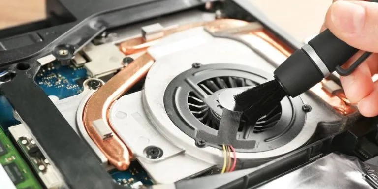
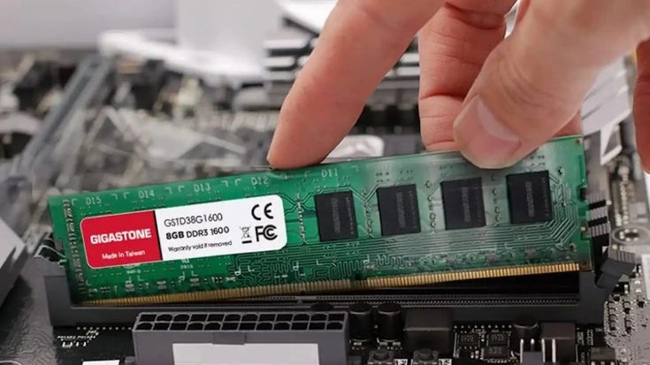
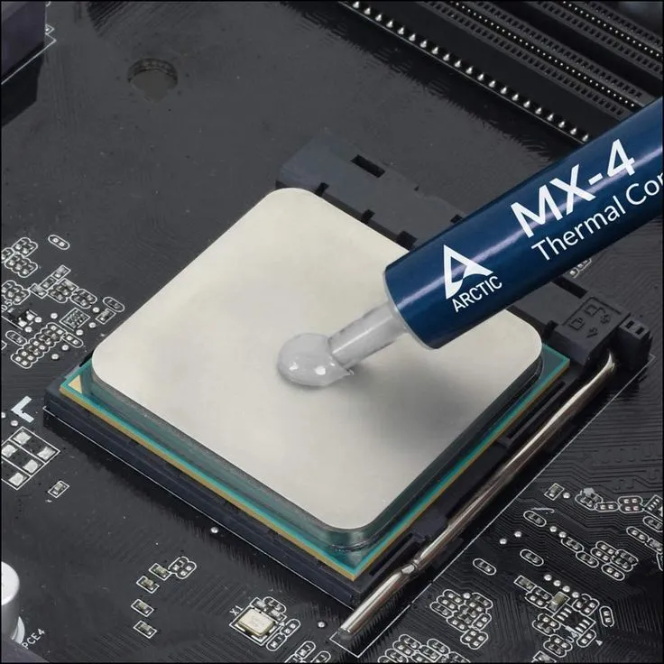
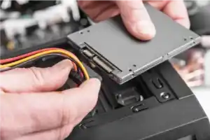
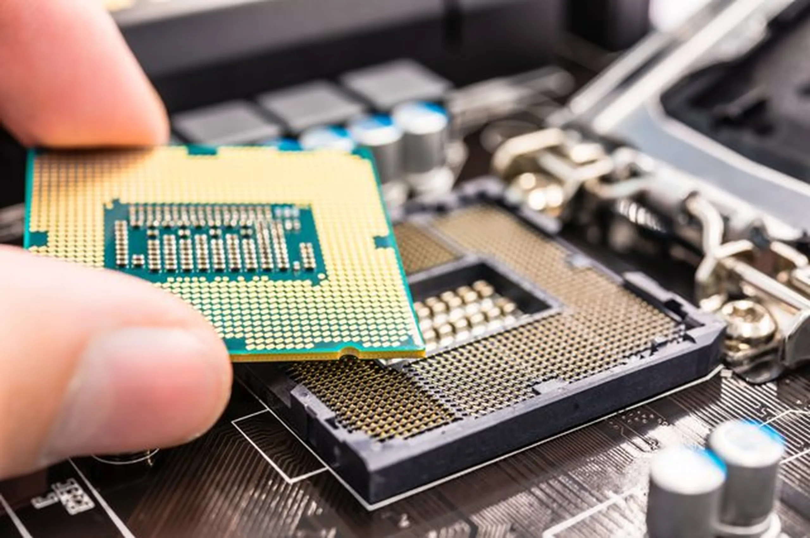

Limpieza de PC
El polvo acumulado dentro del gabinete bloquea el flujo de aire y provoca sobrecalentamiento. Una limpieza periodica con aire comprimido y brochas suaves mantiene los componentes frescos y prolonga la vida util de la computadora.

Memoria RAM
La RAM es la memoria de trabajo temporal del equipo. Almacena los datos que el procesador necesita usar en ese momento. Mas RAM permite tener mas programas abiertos a la vez sin que la PC se vuelva lenta.

Pasta termica
Es un compuesto conducto de calor que se aplica entre el procesador y su disipador. Su funcion es transferir el calor de manera eficiente para evitar que el CPU se sobrecaliente durante el uso intenso.

Disco duro
Es el almacenamiento permanente del equipo. Aqui se guardan el sistema operativo, programas, archivos y fotos. Los SSD son mas rapidos que los HDD tradicionales, reduciendo los tiempos de carga significativamente.

Procesador (CPU)
Es el cerebro de la computadora. Se encarga de ejecutar todas las instrucciones y calculos necesarios para que el sistema funcione. Un procesador con mas nucleos y mayor velocidad de reloj rende mejor en tareas pesadas como edicion de video o gaming.